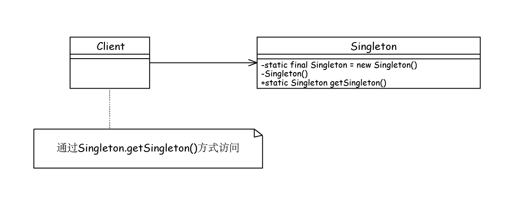

单例模式
单例模式种类
单例模式通用类图

单例模式的优缺点
单例模式使用场景（《设计模式之禅》-P61）
- 要求生成唯一序列号的环境；
- 在整个项目中需要一个共享访问点或共享数据，例如一个Web页面上的计数器，可以不用把每次刷新都记录到数据库中，使用单例模式保持计数器的值，并确保是线程安全的；
- 创建一个对象需要消耗的资源过多，如要访问IO和数据库等资源；
- 需要定义大量的静态常量和静态方法（如工具类）的环境，可以采用单例模式（当然，也可以直接声明为为static的方式）。
注意事项（《设计模式之禅》-P61）：
- 高并发情况下需要考虑线程同步问题
- 单例类不要实现Cloneable接口